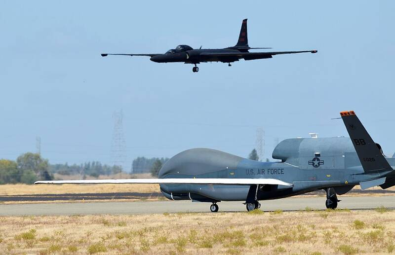

Beale AFB California California · Military base · 39.135°N, 121.436°W A U-2 landing behind an RQ-4 Global Hawk at Beale, 2013. Photo: U.S. Air Force, Public domain (source) Home of the U-2 spy plane. 1 Open in the interactive Watcher Sources Beale Air Force Base Wikipedia